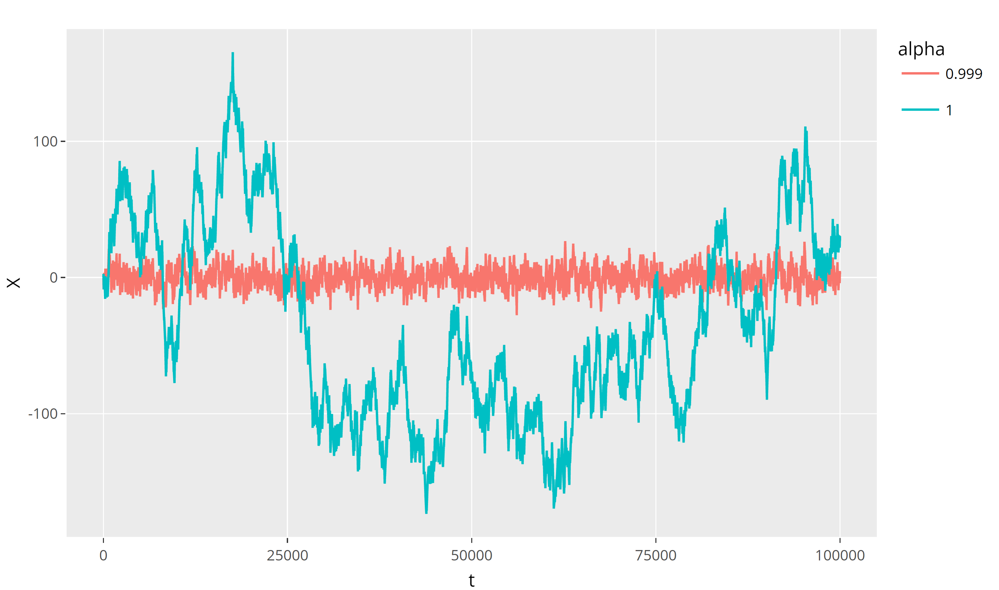

6 Time series
Let \((\Omega,\mathcal{A},\mathbb{P})\) be a probability space and \((S,\mathcal{S})\) be a measurable state space.
Let \(J\) be a set, whose points are usually interpreted as moments of time, i.e. \(J\subset\mathbb{R}_+:=[0,\infty)\).
A stochastic process (a.k.a. random process) is a collection of \(S\)-valued random variables parametrized by \(t\in J\): \[ \{X(t): \Omega\to S \mid t\in J\}. \]
We have hence \(X(t)=X(t,\omega)\), \(t\in J\), \(\omega\in\Omega\), i.e. one can think about a stochastic process as a function of two variables.
We will normally omit \(\omega\) and write \(t\) as a subscript: \[ X_t:=X(t)=X(t,\omega). \]
If \(J\) is continuous set, e.g. \(J=\mathbb{R}_+=[0,\infty)\), then \(\{X_t\mid t\in J\}\) is called a continuous time stochastic process.
If \(J\) is a discrete set, e.g. \(J=\mathbb{Z}_+=\{0,1,2,\ldots\}\), then \(\{X_t\mid t\in J\}\) is called a discrete time stochastic process.
In this case, we will sometimes write \(n\) instead of \(t\).
Recall that a stochastic process is a function of two variables, \(t\) and \(\omega\). If we fix an \(\omega\in\Omega\), the set \(\{X_t(\omega)=X(t,\omega) \mid t\in J\}\) is called a sample path of the process (for the chosen \(\omega\)).
Time series is the sample path of a discrete time stochastic process.
Often, however, this term is used for the stochastic process itself.
Another term, which you may find in the literature, is time series process.
We will deal with real-valued time series, i.e. \(3{S\subset\mathbb{R}}\).
We may also assume that \(J\subset\mathbb{Z}\).
A time series process \(\{X_t\}\) is called if, for all \(n\in\mathbb{N}\) and for all \(k,t_1,\ldots,t_n \in J\) such that \(t_1+k,\ldots,t_n+k\in J\), the joint distributions of random variables \(X_{t_1},\ldots, X_{t_n}\) and \(X_{t_1+k},\ldots, X_{t_n+k}\) are identical.
In other words, for all \(\Delta_1,\ldots,\Delta_n\in\mathcal{S}\), \[ \mathbb{P}\bigl( X_{t_1+k}\in \Delta_1, \ldots, X_{t_n+k}\in \Delta_n\bigr) \tag{6.1}\] does not depend on \(k\).
Stress that, normally, the (random) values of \(X_t\) at different moments of time \(t\) are not independent, hence, the probability in (6.1) is not the product of the corresponding probabilities \(\mathbb{P}( X_{t_i+k}\in \Delta_i)\).
A time series process \(\{X_t\}\) is called , if the following conditions hold:
\(\mathbb{E}(X_t)\) does not depend on \(t\in J\) (i.e. it is a constant in \(t\));
\(\mathbb{E}(X_t^2)<\infty\) for each \(t\in J\);
For each \(s\in J\), \[ \begin{aligned} \mathrm{cov}(X_t,X_{t+s}):&=\mathbb{E}\bigl((X_t-\mathbb{E}(X_t))(X_s-\mathbb{E}(X_s))\bigr)\notag\\ & = \mathbb{E}(X_t\, X_{t+s})-\mathbb{E}(X_t)\,\mathbb{E}(X_{t+s}) \end{aligned} \] does not depend on \(t\in J\) (assuming that \(t+s\in J\)).
Equivalently, \(\mathrm{cov}(X_t,X_s)\) depends on the lag \(s-t\) only (for \(s>t\)).
In particular, \(\mathrm{Var}(X_t)=\mathrm{cov}(X_t,X_t)\) does not depend on \(t\) (here \(s=0\)).
Let \(\{X_t\}\) be a strictly stationary stochastic process and \(\mathbb{E}(X_t^2)<\infty\). Then \(\{X_t\}\) is weakly stationary.
For a (weakly) stationary time series,
the function \[ \gamma_s:=\mathrm{cov}(X_t,X_{t+s}), \qquad s\in J, \] is called the autocovariance function.
For a (weakly) stationary time series, the autocorrelation function is \[ \begin{aligned} \rho_s:&=\corr(X_t,X_{t+s})\notag\\&=\frac{\mathrm{cov}(X_t,X_{t+s})}{\sqrt{\mathrm{Var}(X_t)}\sqrt{\mathrm{Var}(X_{t+s})}}=\frac{\gamma_s}{\gamma_0}. \end{aligned} \]
Let \(J=\mathbb{Z}\). Then the autocovariance and autocorrelation functions are even functions.
Let \(Y\) and \(Z\) be two uncorrelated identically distributed random variables with zero mean and variance \(\sigma^2\); i.e. \(\mathrm{cov}(Y,Z)=0\), \(\mathbb{E}(Y)=\mathbb{E}(Z)=0\), \(\mathrm{Var}(Y)=\mathrm{Var}(Z)=\sigma^2\).
Let \(\lambda\in[0,2\pi]\) be a fixed number, and consider a continuous-time random process \[ X_t = Y \cos(\lambda t) + Z\sin (\lambda t), \quad t\in\mathbb{R}_+. \] Then (check!) \[ E(X_t)=0, \quad E(X_t^2)=\sigma^2<\infty, \]
\[ \begin{aligned} &\quad \mathrm{cov}(X_t,X_{t+s}) = \mathbb{E}(X_tX_{t+s}) \\ &= \mathbb{E}\bigl(Y^2\cos(\lambda t)\cos(\lambda (t+s)) +Z^2\sin(\lambda t)\sin(\lambda (t+s))\bigr) \\&=\sigma^2 \cos(\lambda s)=:\gamma_s, \end{aligned} \] hence \(\{X_t\}\) is weakly stationary, and \(\rho_s=\cos(\lambda s)\).
A time series process \(\{e_t\}\) is called a white noise iff \[ \mathbb{E}(e_t)=0, \qquad \mathrm{cov}(e_t,e_{t+s})=\begin{cases} \sigma^2, & \text{if } s=0,\\ 0, & \text{otherwise}. \end{cases} \] In other words, the white noise is an example of a weakly stationary time series of uncorrelated random variables with zero mean.
Let \(X=\{X_t\}\) be a time series process.
The backward shift operator \(B\) is given by \[ (BX)_t = X_{t-1}. \]
The difference operator \(\nabla:=1\!\!1-B\) is given by \[ (\nabla X)_t = X_t-X_{t-1}. \]
Both operators can be applied repeatedly, e.g. \[ \begin{aligned} (B^2X)_t &= (BX)_{t-1}= X_{t-2},\\ (\nabla^2 X)_t & =X_t-2X_{t-1}+X_{t-2},\\ (B\nabla X)_t & =X_{t-1}-X_{t-2}=(\nabla B X)_t. \end{aligned} \]
This shows that \(B\) and \(\nabla\) commute, that is clear also from \(\nabla=1\!\!1-B\).
The latter formula allows to simplify calculations (henceforce, we will omit brackets: e.g. \(\nabla X_t\) instead of \((\nabla X)_t\), unless it may lead to misunderstanding): \[ \begin{aligned} \nabla^3 X_t & = (1\!\!1-B)^3 X_t \\& = (1\!\!1-3B+3B^2-B^3)X_t \\ & = X_t -3X_{t-1}+3X_{t-2}-X_{t-3}. \end{aligned} \]We can also rewrite expressions using difference operators, e.g. \[ \begin{aligned} &\quad X_t-5X_{t-1}+7X_{t-2}-3X_{t-3}\\ &=X_t-X_{t-1}-4X_{t-1}+4X_{t-2}+3X_{t-2}-3X_{t-3}\\ &=\nabla X_t -4\nabla X_{t-1}+3\nabla X_{t-2}\\ & =\nabla X_t-\nabla X_{t-1}-3\nabla X_{t-1}+3\nabla X_{t-2}\\ & = \nabla^2 X_t -3\nabla^2 X_{t-1}. \end{aligned} \]
Let \(Y_t=\nabla X_t=X_t-X_{t-1}\), \(t\in \mathbb{N}\). Then \[ \begin{aligned} X_t&= Y_t+X_{t-1}= Y_t+Y_{t-1}+X_{t-2}=\ldots\\ &=X_0 +Y_t+Y_{t-1}+Y_{t-2}+\ldots +Y_1\\ & =X_0 +Y_t+BY_t+B^2Y_t + \ldots +B^{t-1}Y_t\\ & = X_0+(1\!\!1+B+B^2+\ldots B^{t-1})Y_t, \end{aligned} \] where \(1\!\!1 =B^0\) is the identity operator.
Note that the last brackets contain \(t\) summands.
Let \(p\in\mathbb{N}\). The autoregressive process \(AR(p)\) of the order \(p\) is: \[ X_t = \mu + \alpha_1 (X_{t-1}-\mu)+ \ldots + \alpha_p (X_{t-p}-\mu) + e_t, \tag{6.2}\] where \(\mu\in\mathbb{R}\) and \(e_t\) is a white noise.
The relation (6.2) can be rewritten as follows: \[ \bigl( 1\!\!1 - \alpha_1 B - \ldots -\alpha_p B^p\bigr)(X_t-\mu)=e_t. \tag{6.3}\]
In particular, we will be interested to find the conditions when \(X_t\) is weakly stationary.
Note that \(AR(1)\) is the only autoregressive process which is a Markov chain.
We consider this case first, in more details.
Let in (6.2) \(p=1\) and \(\alpha:=\alpha_1{{\neq 0}}\).
Then, iterating, \[
\begin{aligned}
X_t-\mu&=\alpha(X_{t-1}-\mu)+e_t\\
&= \alpha^t (X_0-\mu)+\sum_{k=0}^{t-1}\alpha^ke_{t-k}.
\end{aligned}
\tag{6.4}\] Then, since \(\mathbb{E}(e_t)=0\) for all \(t\),
\[
\mathbb{E}(X_t)=\mu+\alpha^t (\mathbb{E}(X_0)-\mu).
\] Therefore, to have \(\mathbb{E}(X_t)\) independent on \(t\), we would require \({\mathbb{E}(X_0)=\mu}\).
Next, assuming that \(X_0\) and \(e_t\) are independent for all \(t\),
we get, denoting \(\sigma^2:=\mathrm{Var}(e_t)\),
\[
\begin{aligned}
\mathrm{Var}(X_t) &=\alpha^{2t}\mathrm{Var}(X_0)+\sum_{k=0}^{t-1}\alpha^{2k}\sigma^2\\
& = \alpha^{2t}\mathrm{Var}(X_0) + \sigma^2 \frac{1-\alpha^{2t}}{1-\alpha^2}\\
& = \frac{\sigma^2}{1-\alpha^2}+\alpha^{2t}\biggl(\mathrm{Var}(X_0)-\frac{\sigma^2}{1-\alpha^2}\biggr),
\end{aligned}
\] provided that \(|\alpha|\neq 1\).
Therefore, to have \(\mathrm{Var}(X_t)\) independent on \(t\), we would require \({\mathrm{Var}(X_0)=\frac{\sigma^2}{1-\alpha^2}}\) and \(|\alpha|\neq1\).
(Note that \(|\alpha|=1\) implies \(\mathrm{Var}(X_t)=\mathrm{Var}(X_0)+\sigma^2 t\).)
However, the restrictions on \(X_0\) are often not natural.
More importantly, on practice, people study processes which describe some established characteristics, which started to change a while ago, i.e., informally, the starting time was at “\(t=-\infty\)”.
More rigorously, we assume \(t\in\mathbb{Z}\) in (6.4) and continue the iteration there (i.e. rewrite \(X_0\) through \(X_{-1}\) and so on).
We will get then: \[ X_t-\mu=\sum_{k=0}^\infty \alpha^k e_{t-k}. \tag{6.5}\]
Therefore, if \({|\alpha|<1}\), then \[ \mathbb{E}(X_t)=\mu, \qquad \mathrm{Var}(X_t) = \frac{\sigma^2}{1-\alpha^2}. \] Moreover, we have then \[ \begin{aligned} \mathrm{cov}(X_t,X_{t+s})& = \sum_{k=0}^\infty\sum_{j=0}^\infty \alpha^k \alpha^j\mathrm{cov}(e_{t-k} , e_{t+s-j})\\ &= \sum_{k=0}^\infty\alpha^k \alpha^{k+s} \sigma^2 =\alpha^s \frac{\sigma^2}{1-\alpha^2}. \end{aligned} \] Hence, indeed, \(X_t\) is a weakly stationary process with the autocovariance function \(\gamma_s=\gamma_0 \alpha^s\),
and thus the autocorrelation function \(\rho_s=\alpha^s\).
The relation (6.4) can be rewritten, see (6.3): \[ (1\!\!1-\alpha B)(X_t-\mu)=e_t. \tag{6.6}\]
Next, its solution (6.5) can be also rewritten in terms of \(B\): \[ X_t-\mu = \sum_{k=0}^\infty \alpha^k B^ke_t. \] In other words, for \({|\alpha|<1}\), there exists the inverse operator to \(1-\alpha B\): \[ (1\!\!1-\alpha B)^{-1}=\sum_{k=0}^\infty \alpha^k B^k. \]
Example: \(AR(1)\), \(\alpha_1=\alpha\), \(z_1=\frac{1}{\alpha}\)

Let \(q\in\mathbb{N}\). The moving average process, \(MA(q)\) of the order \(q\) is: \[ X_t=\mu+e_t+\beta_1 e_{t-1}+\ldots +\beta_q e_{t-q}, \tag{6.9}\] where \(\mu\in\mathbb{R}\) and \(e_t\) is the white noise.
It can be rewritten: \[ X_t-\mu =\bigl( 1\!\!1+\beta_1 B+\beta_2 B^2 +\ldots+\beta_q B^q \bigr)e_t. \tag{6.10}\]
Clearly, since \(\mathbb{E}(e_t)=\) and \(\mathrm{Var}(e_t)=\sigma^2\), we have \[ \mathbb{E}(X_t)=\mu, \qquad \mathrm{Var}(X_t)=\sigma^2\biggl(1+\sum_{k=1}^q \beta_k^2\biggr). \]
Moreover, setting \(\beta_0:=1\), we have \[ \begin{aligned} \mathrm{cov}(X_t,X_{t+s})&=\mathbb{E}(X_t\, X_{t+s})\\&= \sum_{k=0}^q\sum_{j=0}^q \beta_k\beta_j \mathrm{cov}(e_{t-k},e_{t+s-j})\\ & = \sum_{k=0}^{q-s}\beta_k\beta_{k+s} \sigma^2. \end{aligned} \] In particular, any \(MA(q)\) process is weakly stationary.
An \(MA(q)\) process (6.9) is called invertible,
if the noise at time \(t\) can be represented through the values of the process at times \(s\leq t\):
\[
e_t =\mathrm{const}+ X_t +\gamma_1 X_{t-1}+\ldots+\gamma_q X_{t-q}+\ldots,
\tag{6.11}\] for some \(\gamma_k\in\mathbb{R}\), such that {\(\sum\limits_{k=1}^\infty\gamma_k^2<\infty\)}.
In other words \(MA(q)\) process is invertible if the operator $1!!1+_1 B ++_q B^q $ in (6.10) is invertible.
Let \(MA(q)\) process (6.9) be given. Consider its characteristic equation \[ 1+\beta_1z+\beta_2 z^2+\ldots+\beta_q z^q=0. \tag{6.12}\]
Let all the roots of this characteristic equation (including complex roots) lie outside the unit circle on the complex plain, i.e. let \(|z_k|>1\) for all roots \(z_1,\ldots,z_q\) of (6.12).
Then \(MA(q)\) process (6.9) is invertible.
The opposite statement is also true.
Note that \(AR(p)\) process is always invertible in this sense, by the very definition (6.2).
For \(q=1\), the proof of the previous theorem becomes especially simple.
Namely, then (denoting \(\beta:=\beta_1\)) \[
\begin{aligned}
e_t&=X_t-\mu - \beta e_{t-1}\\&=X_t-\mu - \beta (X_{t-1}-\mu - \beta e_{t-2})=\ldots
\\&= (X_t-\mu) -\beta (X_{t-1}-\mu)\\&\quad +\beta^2 (X_{t-2}-\mu)-\beta^3(X_{t-3}-\mu)+\ldots
\\&=c+\sum_{k=0}^\infty (-\beta)^k X_{t-k},
\end{aligned}
\] where, {for \(|\beta|<1\) only}, \[
c= -\mu\sum_{k=0}^\infty (-\beta)^k=-\frac{\mu}{1+\beta}.
\] Let \(\gamma_k:=(-\beta)^k\) with \(|\beta|<1\), then we get
\[
\sum\limits_{k=1}^\infty \gamma_k^2=\frac{1}{1-\beta^2}<\infty.
\]
Actually, we have shown that, for \(|\beta|<1\), \[
(1\!\!1+\beta B)^{-1} = 1\!\!1-\beta B+\beta^2 B^2-\beta^3 B^3+\ldots.
\] The characteristic equation is then \(1+\beta z=0\) and its the only root is \(z=-\frac{1}{\beta}\), thus, \(|z|>1\) iff \(|\beta|<1\).
We consider now a natural combination of \(AR(p)\) and \(MA(q)\).
Let \[ \begin{aligned} X_t-\mu& = \alpha_1 (X_{t-1}-\mu)+\ldots +\alpha_p (X_{t-p}-\mu) \notag \\&\quad+ e_t+\beta_1 e_{t-1}+\ldots +\beta_q e_{t-q}. \end{aligned} \] Or, it can be rewritten: \[ \begin{multlined} (1\!\!1-\alpha_1 B - \ldots -\alpha_p B^p)(X_t-\mu)\\= (1\!\!1+\beta_1 B+\ldots+\beta_q B^q)e_t. \end{multlined} \tag{6.13}\]
An \(ARMA(p,q)\) process if weakly stationary iff its \(AR(p)\) is weakly stationary, i.e. iff all the roots of \[ 1 - \alpha_1 z -\alpha_2 z^2 - \ldots -\alpha_p z^p=0 \] lie outside the unit circle on the complex plane.
An \(ARMA(p,q)\) process is invertible (i.e. there exists an expansion (6.11)) iff its \(MA(q)\) is invertible, i.e. iff all the roots of \[ 1+\beta_1z+\beta_2 z^2+\ldots+\beta_q z^q=0 \] lie outside the unit circle on the complex plane.
The expansion (6.5) shows that, actually, any \(AR(1)\) process with \(|\alpha|<1\) is an \(MA(\infty)\) process with \(\beta_k=\alpha^k\), the latter means, by definition, an {infinite} sum in (6.9) with \(\sum\limits_{k}\beta_k^2<\infty\).
Moreover, it can be shown that any \(AR(p)\) process is an \(MA(\infty)\) process in this sense.
A process \(X_t\) is called an \(ARIMA(p,j,q)\) process if \(X_t\) is not weakly stationary, but \(\nabla^j X_t\) is a weakly stationary \(ARMA(p,q)\) process.
Let \(X_t=X_{t-1}+e_t\), then \(X_t\) is not weakly stationary, but \(Y_t=\nabla X_t = e_t\) is weakly stationary \(ARMA(0,0)\) process, thus \(X_t\) is an \(ARIMA(0,1,0)\) process.
Denote \(Y_t=\nabla^j X_t=(1\!\!1-B)^j X_t\).
Assume, for simplicity, that \(\mathbb{E}(X_t)=0\) (but \(\mathrm{Var}(X_t)\) depends on \(t\)), then \(\mathbb{E}(Y_t)=0\) and if \(Y_t\) is an \(ARMA(p,q)\), it should satisfy (6.13) with \(\mu=0\).
Then (6.13) takes the form \[ \begin{multlined} (1\!\!1-\alpha_1B-\ldots-\alpha_p B^p)(1\!\!1-B)^j X_t \\=(1\!\!1+\beta_1 B+\ldots +\beta_q B^q)e_t. \end{multlined} \]
Therefore, if we consider the \(AR\)-characteristic equation for process \(X_t\), it will have the form \[ (1 - \alpha_1 z -\alpha_2 z^2 - \ldots -\alpha_p z^p)(1-z)^j=0, \] i.e. it has the root \(1\) of multiplicity \(j\). If all other roots lie outside the unit circle, \(X_t\) is an \(ARIMA(p,j,q)\) process.
Let \[ X_t=0.6X_{t-1}+0.3 X_{t-2}+0.1X_{t-3}+e_t-e_{t-1}. \] The \(AR\)-characteristic equation is \[ 1-0.6z-0.3z^2-0.1z^3=0. \] It is easy to see that \(z=1\) is a root.
Using the long division rule, or just rewriting \[ \begin{gathered} 1-z+ 0.4z-0.4z^2+0.1z^2-0.1z^3=0, \\ (1-z)(1+0.4z+0.1z^2)=0, \end{gathered} \] we get that \[ z^2+4z+10=0, \qquad z=-2\pm i\sqrt{6}, \] and \(|z|=\sqrt{10}>1\).
Therefore, \(X_t\) is an \(ARIMA(2,1,1)\) process,
i.e. \(\nabla X_t\) is a weakly stationary \(ARMA(2,1)\) process.